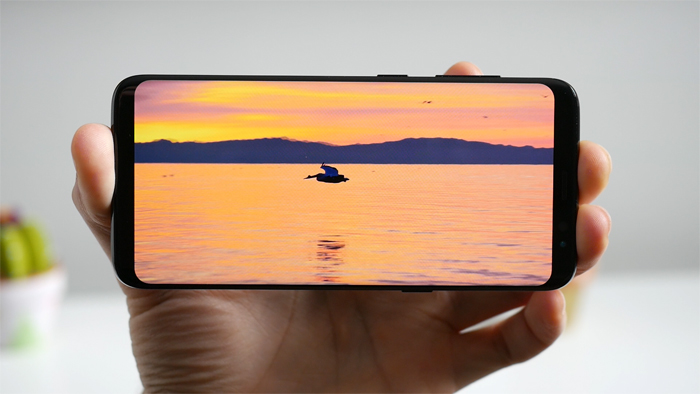

Samsung Galaxy S8, análisis en vídeo: ¿es realmente el mejor móvil del mercado?
¿Es el Samsung Galaxy S8 el mejor móvil del mercado? Respondemos a la gran pregunta del año en nuestro análisis a fondo del nuevo terminal estrella coreano.
Nuevo año, mismos protagonistas, mismo dilema. Samsung llega un nuevo año, un nuevo curso y presenta su smartphone estrella: el Galaxy S8, con el que espera
consolidar otro año más como el que más vende dentro del mercado móvil, y un año más, seguir escalando posiciones en sus precios.
Este año parecía diferente, un año de innovación que empezó a hornearse con el Xiaomi Mi Mix, y que nos hacía augurar lo mejor. Pues bien, este es el Galaxy S8, el
presente y futuro de Samsung, ¿el diseño y tamaño perfecto? ¿mi próximo móvil?
Pantalla y diseño, el REY
Empezamos por el plato fuerte, donde el Galaxy S8 si que puede ser el rey, el diseño. Aquí la verdad es que nada más empezar a mirarle tenemos que traer al escenario a su pantalla. Creo que me quedo corto si os digo que es espectacular, ya lo era el Galaxy S7 edge, pero esto es algo que cuando lo ves, y sobre todo lo usas en la mano, sabes que ya no hay vuelta atrás, las pantallas sin bordes son el presente.
Empezamos por el plato fuerte, donde b Aquí la verdad es que nada más empezar a mirarle tenemos que traer al escenario a su pantalla. Creo que me quedo corto si os digo que es espectacular, ya lo era el Galaxy S7 edge, pero esto es algo que cuando lo ves, y sobre todo lo usas en la mano, sabes que ya no hay vuelta atrás , las pantallas sin bordes son el presente. Prácticamente el 80% del frontal es pantalla, superando a cualquier móvil actualmente, una pantalla SUPER AMOLED, con buenos colores y saturación aunque con algunos problemas como el tono rojizo que Samsung ya está solucionando , un panel de calidad y posiblemente uno de los mejores.
Conclusiones
Por 759 euros, cuyo precio de compra mínimo os dejo siempre aquí debajo, en pleno 2017, ¿es este el rey en Android, o el rey en la telefonía móvil? Sinceramente,
creo que si. El curso pasado el GooglePixel me conquisto como mejor móvil pese a que su diseño se quedara notablemente atrás, pero este año el trabajo en optimización
de pantalla, por ser tan increíble en la experiencia de uso, vale por dos.
Así que de momento si, este es el rey móvil a día de hoy. Note 8, OnePlus 5, iPhone 8, nuevos a Pixel o Mate 10, aunque queda mucha carne que cortar, pero hoy porhoy,
este es el móvil top a batir, y sin dudamerece y mucho la pena invertir lo que nos piden por él, aunque solo a unas semanas de su lanzamiento, ya lo podemos encontrar
unos 50-60 euros más barato, quizás nos interesa esperar.